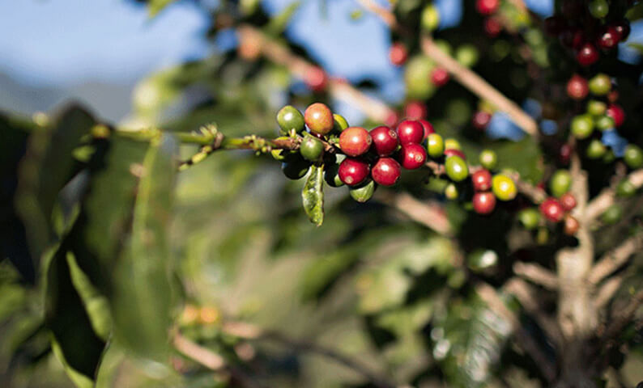
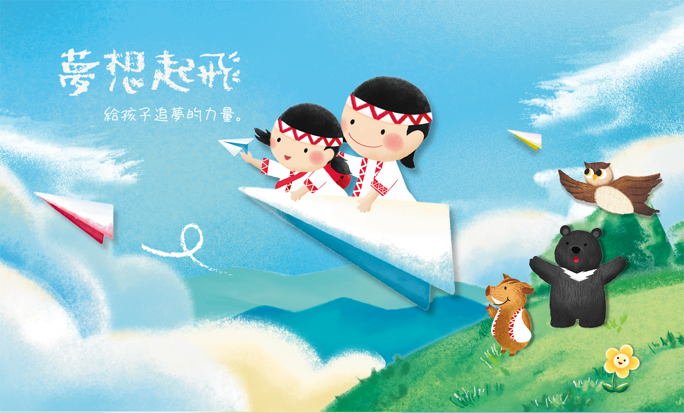

從原產地的一株咖啡樹，最終成為您手中的一杯咖啡；我們堅持採購並且烘焙最高品質的咖啡，這是我們一直努力的基本原則；最初的十英呎到最後十英呎的珍貴體驗，為咖啡的故事做了最佳的註解，同時也塑造出咖啡家族的獨特風味及口感特性，閱讀咖啡的故事，可以讓您更瞭解咖啡，豐富您的咖啡體驗。
1971 年星巴克創立於美國西雅圖派克市場，1987 年霍華．舒茲(星巴克主席、總裁暨行政總裁)在當地投資者的協助下買下星巴克，同年在加拿大溫哥華開拓門市，為首次進軍國際市場。今日星巴克門市遍佈全球，已是全世界最主要的咖啡烘焙與零售業者，霍華‧蕭茲先生經營咖啡事業著重在人文特質與品質堅持，強調尊重顧客與員工，並堅持採購全球最好的咖啡豆烘焙製作，提供消費者最佳的咖啡產品與最舒適的消費場所，經營 Starbucks Coffee 成為當今全球精品咖啡領導品牌，備受國際學者專家推崇，譽為「咖啡王國傳奇」。
星巴克的企業使命：啟發並滋潤人們的心靈，在每個人、每一杯、每個社區中皆能體現。秉持續追求卓越以及實踐企業使命與價值觀，我們透過每一杯咖啡的傳遞，將獨特的星巴克體驗帶入每位顧客的生活中。
更多相關資訊請至 美國星巴克企業網站 www.starbucks.com
Starbucks™ Shared Planet.™ 星巴克共愛地球™ 計劃是我們對品牌的承諾，從採購咖啡豆的源頭開始，重視與關注減少環境污染的議題，同時參與產地社區的建設與服務。
對星巴克而言，道德採購不僅僅是跟供應商購買咖啡。我們一直努力幫助支持優質、透明且公平的交易。我們堅持從源頭保證品質，並重新投資到種植咖啡的人們和社區中。
謝謝您的支持，讓原鄉孩子安心念書，這不只是求學之路，更是夢想的回鄉之路！
